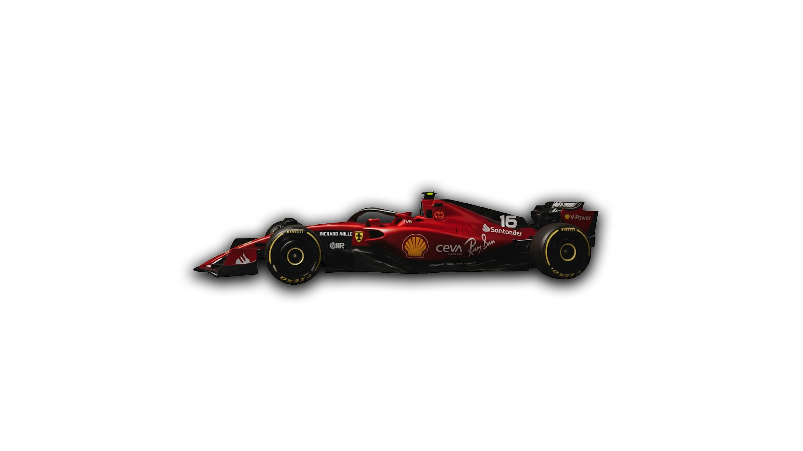
Formule 1 je svět, kde se setkává dokonalost, rychlost, inovace… A pak je tu Ferrari. Tým, který dokáže během jediného víkendu předvést genialitu, chaos, rychlost i zoufalství, naději a dokonce i tragédii.
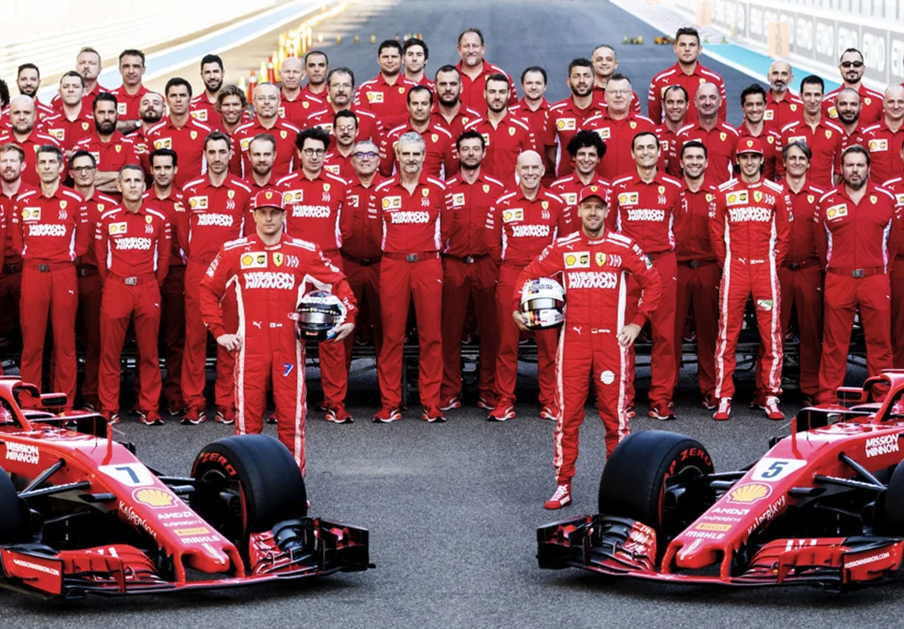
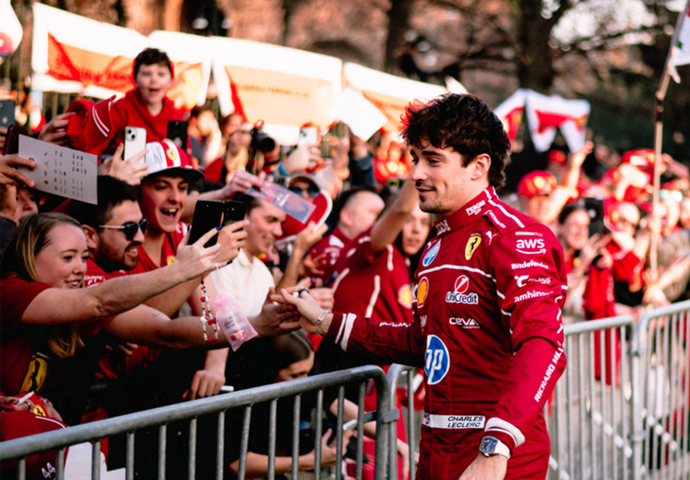
Ferrari fanoušek je specificky vyvinutý lidský druh. Je to člověk, který umí doufat bez důkazů, milovat bez podmínek, trpět v přímém přenosu a smát se sám sobě, protože jinak by se zbláznil.
Tento web vznikl jako bezpečný prostor pro všechny, kteří každý rok slyší větu: „Tohle bude náš rok!“ A ještě častěji zažívají emocionální horskou dráhu jménem Scuderia Ferrari.
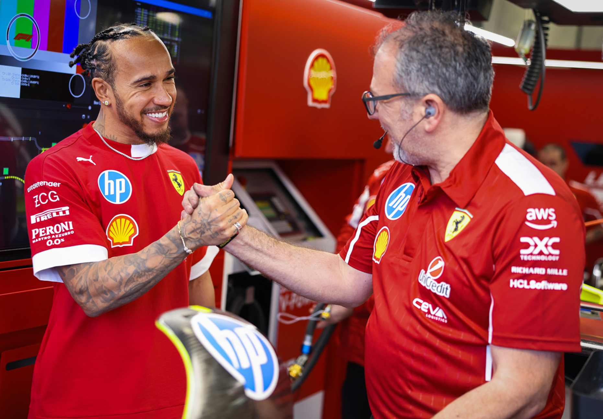
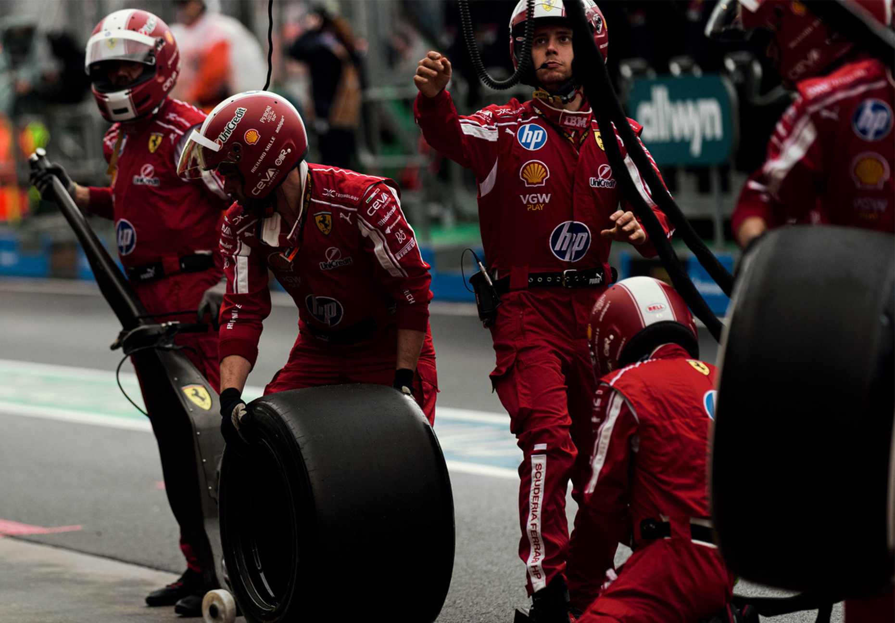
Je to pocta právě těmto lidem. Těm, kteří přežili éru strategie „náhody“, pitstopů z paralelního vesmíru, vozu, který je rychlý pouze v pátek a nekonečného seznamu pilotů, jejichž psychika prošla větším zatížením než brzdové kotouče v Monze.
Pojďme se ponořit do světa, kde se můžeš těšit na cokoli kromě stabilní strategie a konzistentní nedělní rychlosti.
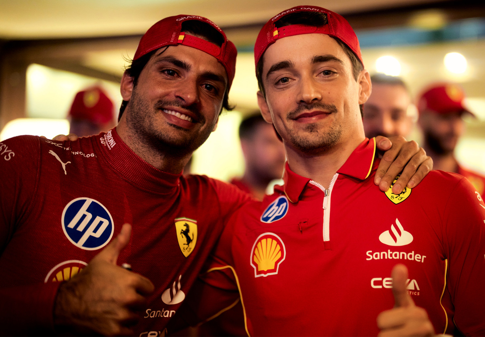
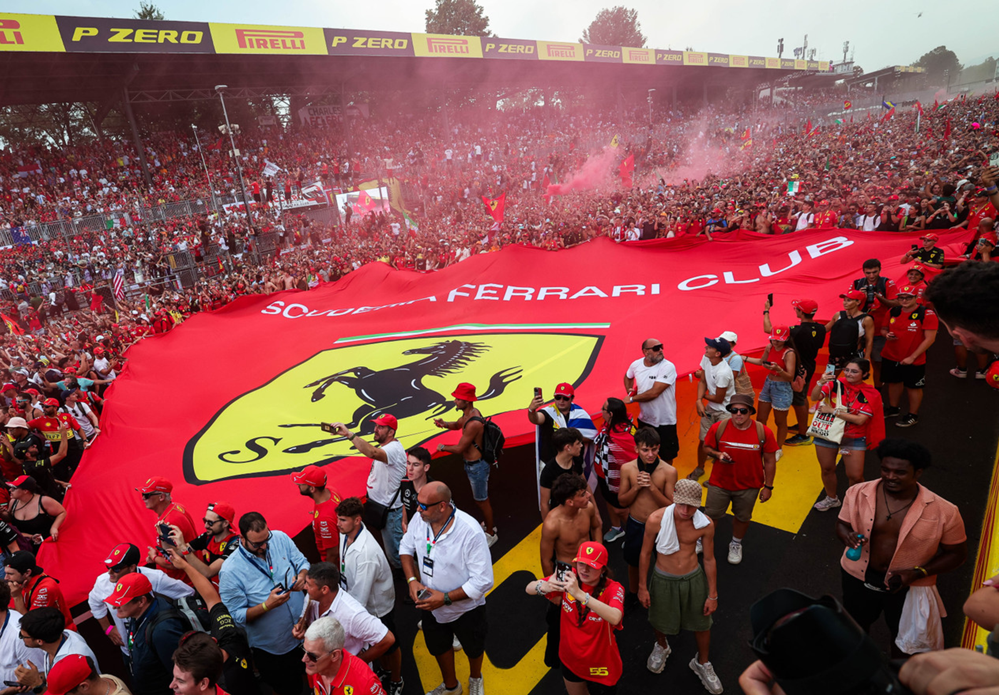
Tak vítej v klubu těch, kteří už dlouho nezažili klidnou neděli. V komunitě přeživších. Ve světě, kde je všechno možné kromě toho, že Ferrari dokončí závod bez dramat.
Ferrari totiž není jen tým Formule 1. Ferrari je životní styl a zároveň diagnóza. Je to vztah na dálku, bolest, která bolí víc než jakékoli zlomené srdce. Je to zkušenost, kterou ti nikdo nevysvětlí, dokud ji nezažije.
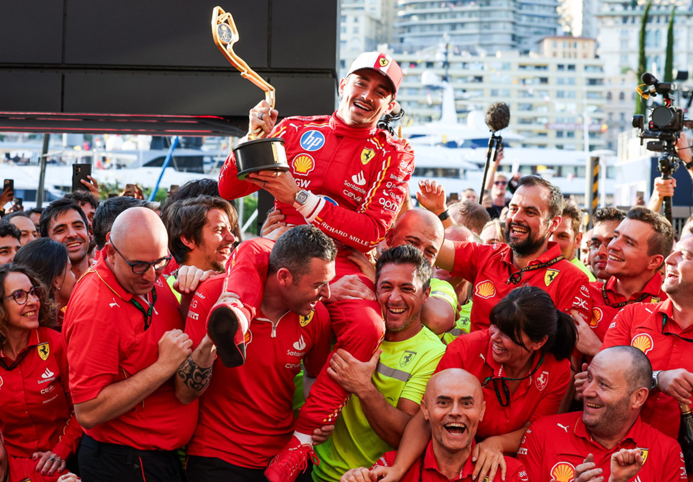
Ferrari je mistrem optimismu. Možná se jim nedaří na trati, ale v pozitivních prohlášeních nemají konkurenci.
Ferrari má unikátní schopnost přivést své fanoušky do stavu, který se dá popsat jen jako organizovaný optimismus s prvky sebezapírání. Každá zima začíná stejně: nový vůz, nové barvy, nový management, nová PR videa, nový hype. Fanoušci sdílí první fotky monopostu, analyzují každý detail a hledají znamení, že tentokrát… tentokrát to opravdu vyjde.
A fanoušci? Ti si ukládají memy, připravují popcorn a čekají, kdy se ta pohádka začne rozpadat. Obvykle… po prvních dvou závodech.
A tak každým rokem procházíme stejným cyklem: nadšení → nervozita → frustrace → rezignace → nová naděje. Ferrari není tým. Ferrari je emoční tradice.
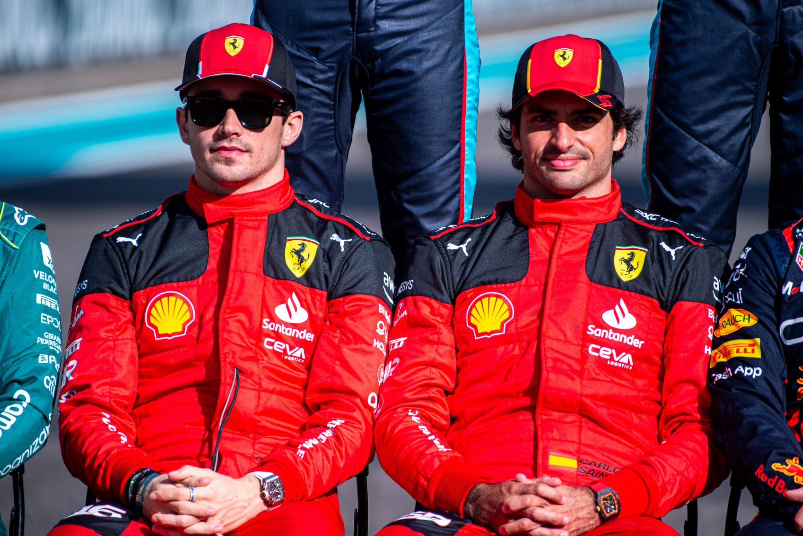
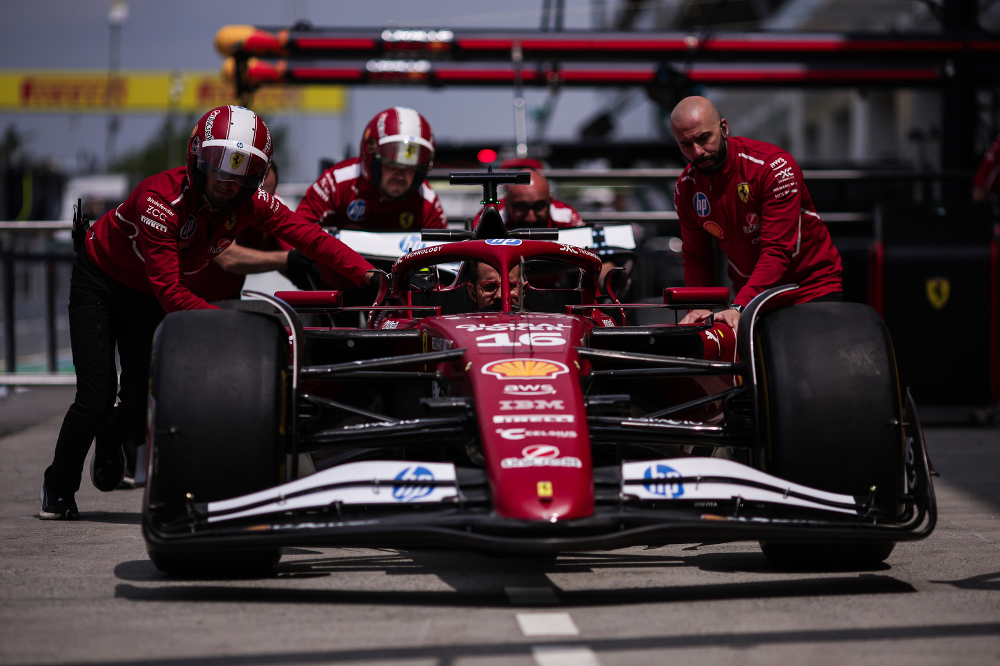
Pokud by šampionát F1 hodnotil páteční tréninky, Ferrari by mělo titul už deset let po sobě. Ferrari má zvláštní talent: kdykoli se jedná o rychlost, která ničemu nepomáhá, Ferrari je fenomenální. Páteční tréninky? Red Bull? Mercedes? Ferrari říká: „Podrž mi Limoncello.“
Pro Ferrari je pátek takový safe-space místo, kde svět ještě dává smysl. Jenže pak přijde sobota a auto začne odhalovat své pravé já, rychlost se záhadně rozpustí jako espresso s příliš mnoho mlékem.
A nejen že přijde o rychlost, ale také ztratí grip, stane se přetáčivým a nedotáčivým zároveň, začne vibrovat, nechce zatáčet, ale zároveň zatáčí moc, a najednou bojuje o P5 s Astonem, který vypadal den předtím jako traktor.
A neděle? Neděle je vrchol celé proměny. Auto, které v pátek dělalo nejlepší časy, najednou jede jako tříválcová dodávka převážející cement. Ferrari v závodě často vypadá, jako by si pilot musel každou zatáčku domlouvat s vozem vyjednáváním.
Je to jako kdyby jejich auto mělo nastavený týdenní limit výkonu a vyplácalo vše už v pátek ráno.
Ferrari tak pravidelně dokazuje, že umí být nejrychlejší, když je to naprosto k ničemu.
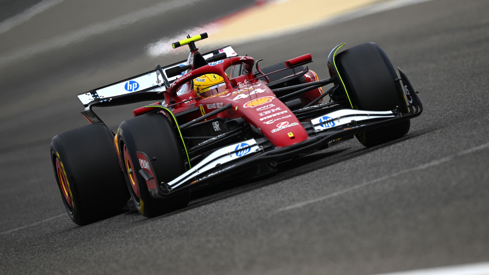
Jezdci Ferrari jsou známí pro depresivní sklony. Pilot Ferrari nezažívá normální F1 víkend. Pilot Ferrari zažívá psychologickou reality show, ve které nestačí talent, rychlost a ani dobrá startovní pozice. Jízda za Ferrari není obyčejná práce. Je to vstup do bratrstva mužů, kteří znají bolest, frustraci a nekonečná očekávání.
Stačí jediný špatný pokyn a rázem jsi v boji s autem, se strategií i s vlastním osudem. Není divu, že jezdci Ferrari vyvíjejí extrémní trpělivost. A někdy i náznaky existenciální krize.
Ferrari je stroj na lámání psychiky. Každý jezdec si projde konfliktem mezi nadějí a realitou - bohužel většina prohraje. Mnozí přišli s ambicemi o titul a skončili jako memy, plačící emoji, smutné highlighty na YouTube, nebo jako komentátoři, kteří už ani nenaznačují, že Ferrari někdy něco vyhraje.
Ale přesto každý, kdo do Ferrari přijde, věří, že on bude ten, kdo to změní. Že právě on ten červený chaos zkrotí. A to je právě to tragikomické. Ferrari mění šampiony ve filozofy.
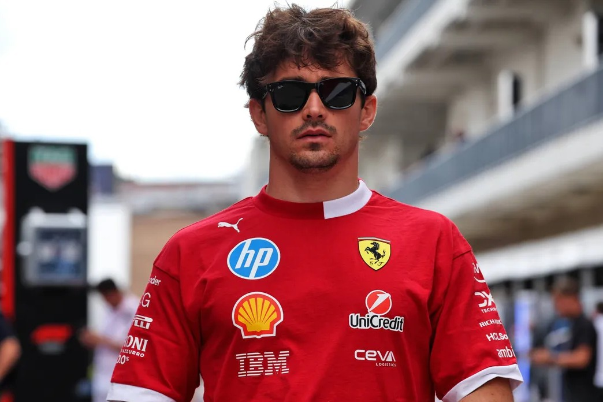
Charles je symbolem Ferrari. Talentovaný, rychlý, milovaný… a neustále trpící. Jeho slavné „What are we doing, guys?“ je soundtrackem každé sezóny.
Charlesův výraz po další strategické chybě by měl mít vlastní emotikon. A přesto on pokračuje. Možná proto, že věří. Možná proto, že už rezignoval. A možná taky proto, že Ferrari je návyk jako kofein.
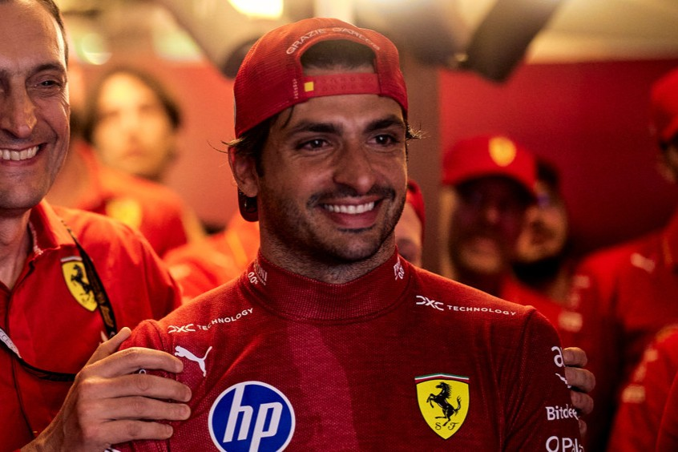
Carlos Sainz se ve Ferrari stal jezdcem, který musel kromě řízení auta zvládat i neustálé improvizace. Kvůli chaotickým strategickým rozhodnutím, což z něj paradoxně udělalo nejrozumnější hlas v týmu.
Navzdory tomu, že svými vlastními rozhodnutími dokázal týmu několikrát zachránit závod a často fungoval tak trochu jako neoficiální šéf strategie, Ferrari mu opakovaně nepřipravilo odpovídající podmínky ani stabilitu, kterou by jezdec jeho typu potřeboval pro plné rozvinutí potenciálu.
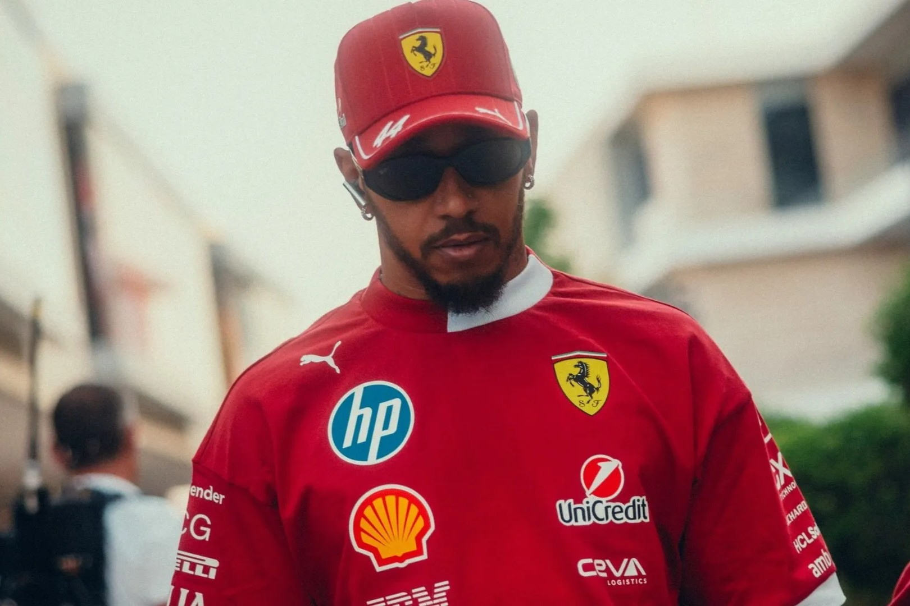
Když Lewis oznámil přestup do Ferrari, svět se rozdělil na dvě skupiny: optimisté a realisté.
Lewis věřil, že s Ferrari napíše poslední velkou kapitolu. A zatím zjišťuje, že největší soupeř není Red Bull konkrétně Max Verstappen, ale strategické rozhodnutí z boxové zdi. Jeho schopnost zachovat klid je teď největším přínosem Ferrari. A možná i jediným.
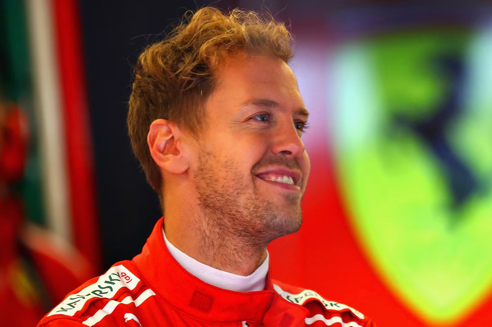
Sebastian je chodící legenda. A Ferrari z něj udělalo chodící mem. Jeho vývoj v týmu by mohl být studijním materiálem.
Seb byl jedním z mála, kdo dokázal být pozitivní i tehdy, když mu dali špatné gumy. Podruhé.
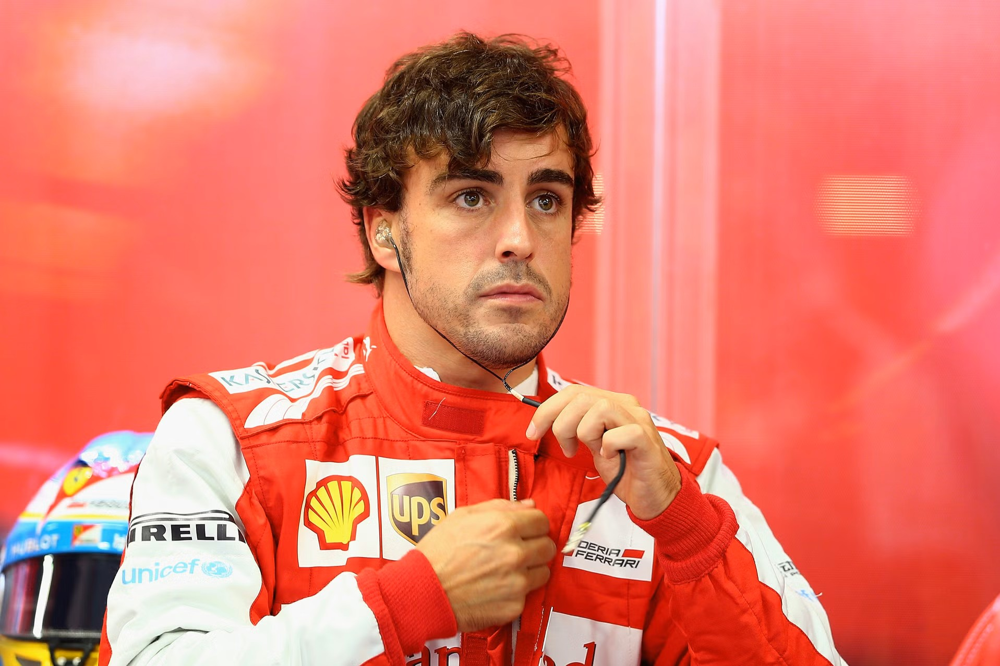
Fernando Alonso a Ferrari to je vztah, který by mohl mít vlastní dramatickou minisérii. Když přišel do týmu, věřil, že společně získají titul. A byl zatraceně blízko.
Ale místo šampionátu dostal: Plán A až Z, strategické noční můry a tým, který dokázal promarnit i to, co vypadalo jistě. Fernando je známý svou výjimečnou schopností říct velmi hodně pomocí velmi málo slov. A ve Ferrari to dovedl k dokonalosti.
Jeho trpělivost u Ferrari by měla být zapsaná v Guinnessově knize rekordů. A přesto, navzdory chaosu, měl tým i fanoušky rád. Fernando je zkrátka nezničitelný. A možná i proto patří k největším legendám, které Ferrari kdy mělo - i když ho to stálo pár šedivých vlasů a několik duševních kolapsů.

Největší nepřítel Ferrari je… Ferrari. Jejich strategie je legendární. Někdo říká, že je to věda, Ferrari dokazuje, že je to experimentální umění. Když ostatní týmy řeší undercut, Ferrari přemýšlí: „Co kdybychom udělali něco úplně jiného?“ Výsledky?
Ferrari hraje strategii jako UNO, kde si sami vymýšlejí pravidla v průběhu hry. A přesto je na tom něco kouzelného: nikdy nevíš, co přijde. Nikdy. Ferrari strategie není chyba. Není to ani náhoda. Ferrari strategie je lifestyle.
Když u Ferrari existují dvě dobré možnosti, Ferrari vybere možnost špatnou, nebo nově vytvořenou superšpatnou možnost, nebo něco úplně nečekaného, co ani FIA nemá v pravidlech.
Legenda říká, že Ferrari má plány A až Z, ale realita je taková, že všechny fungují jako puzzle z jiného dílu. Jezdec: „What’s the plan?“ Ferrari: „Plan… wait… we’ll update you.“ Fanoušci: „Ne! Už ne!“
Tato strategie dovedla fanoušky k tomu, že dnes mají při sledování závodu posttraumatické reakce na slova jako:
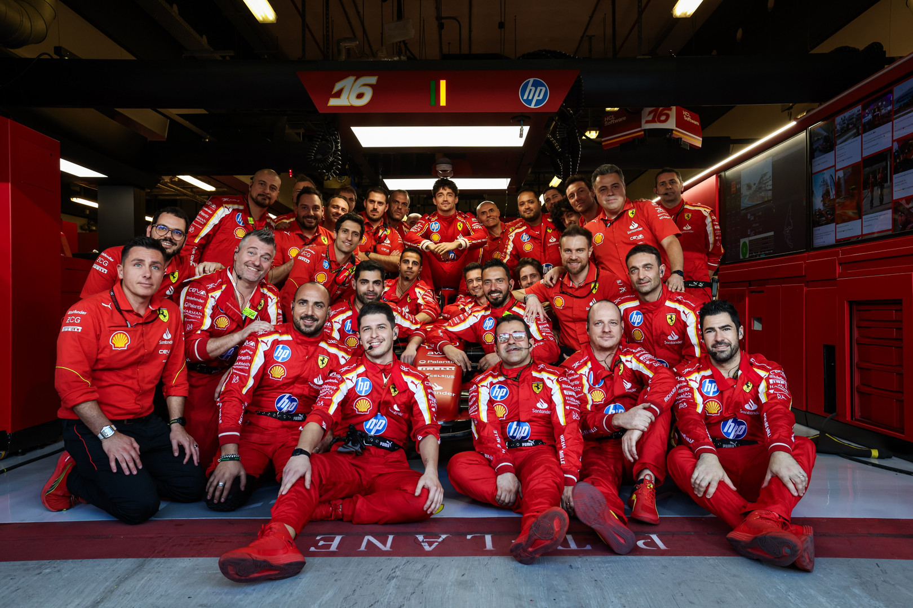
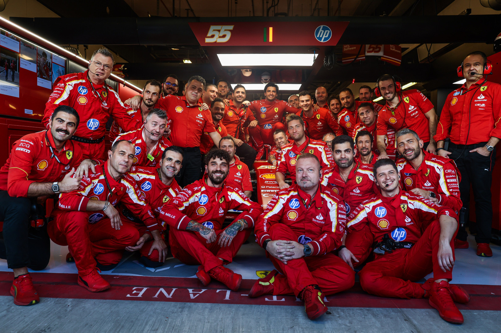
Ferrari rádio není komunikace. Ferrari rádio je příběh, je to emocionální zážitek. Někdo poslouchá podcasty, někdo audioknihy, ale Ferrari fanoušci poslouchají… cirkus.
Zatímco ostatní týmy mají jasné instrukce, Ferrari připomíná komunikační šarádu, domácí hádku, telenovelu, a občas i snahu kontaktovat vesmírné síly.
Ferrari hlášení je extrémně specifické, plné dlouhých pauz, nejistoty, náhlých změn rozhodnutí a překvapení i pro samotné inženýry.
Průměrná konverzace Ferrari:
A jezdec mezitím přemýšlí, jestli má vůbec ještě kontrolu nad vlastním životem. Ferrari rádio by klidně mohlo vycházet jako dramatická audiokniha nebo ze stará telenovela.
Ferrari rádio je tak ikonické, že by si zasloužilo Netflix spin-off: „Drive to Confusion – Life on Ferrari Radio“
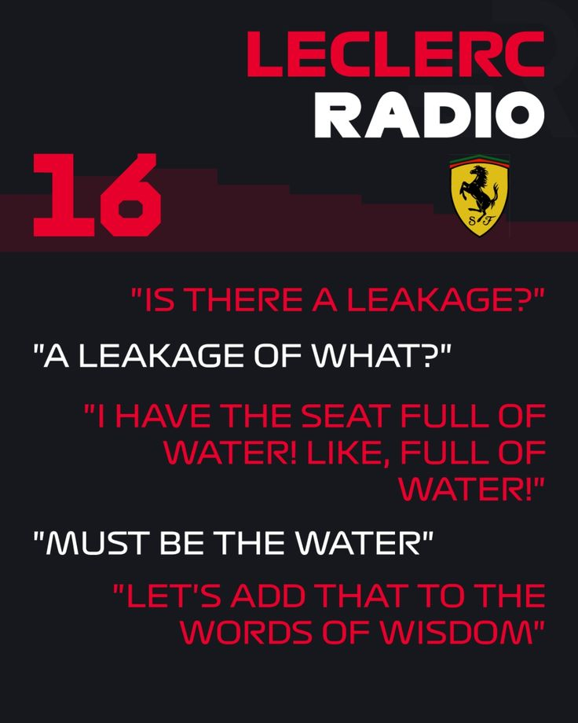
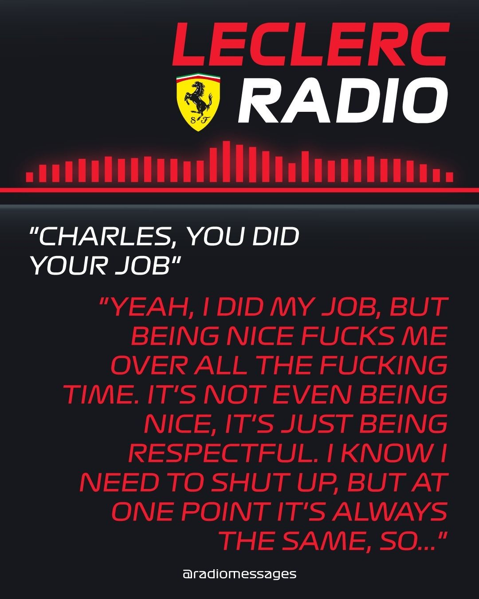
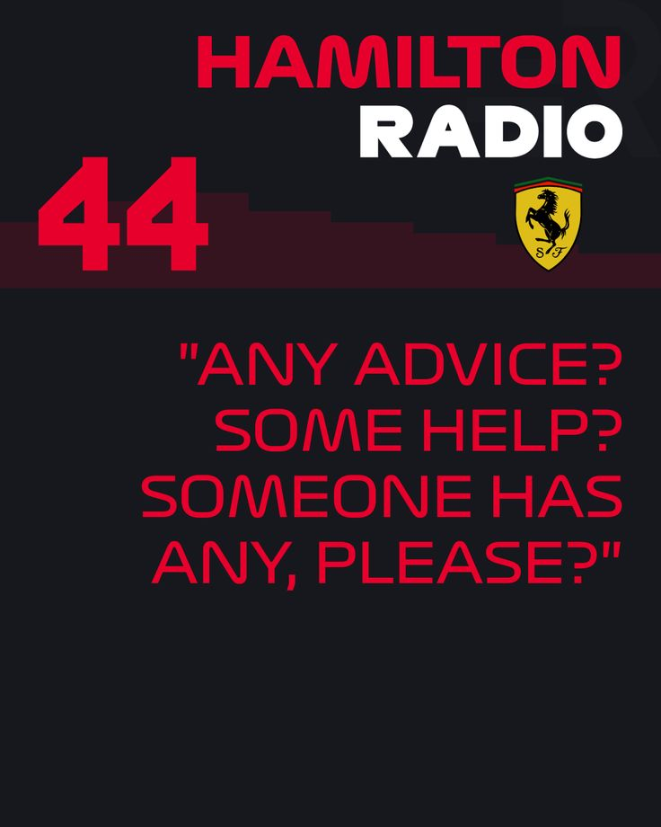
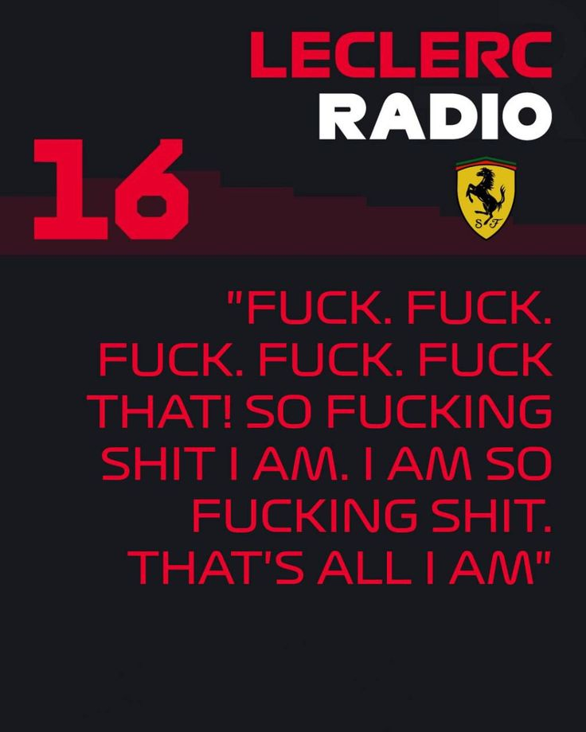
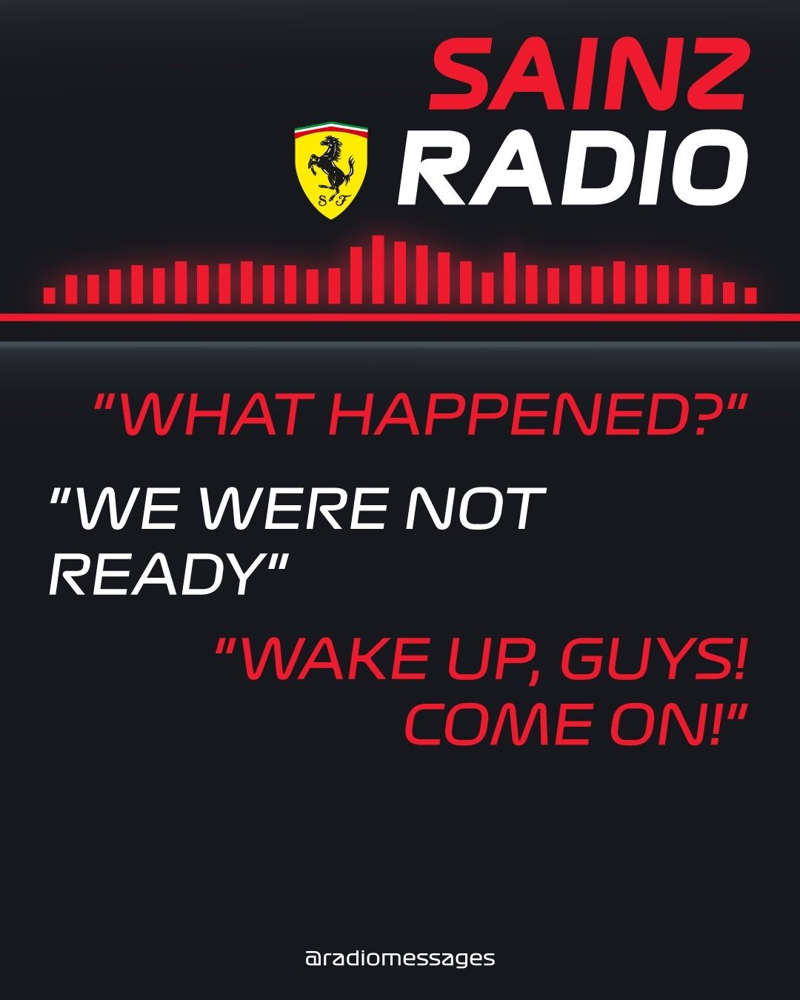
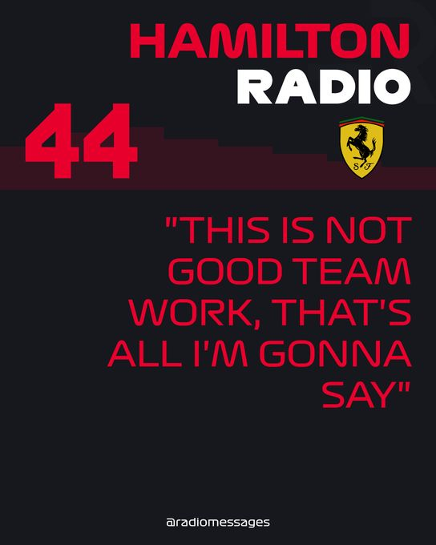